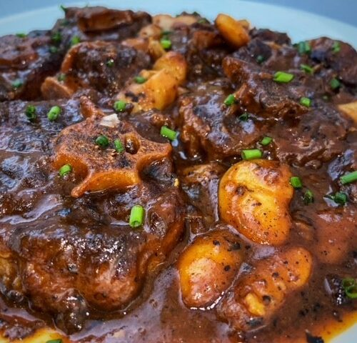

Home
Oxtail

Description
This deeply flavorful Jamaican stew is loaded with tender oxtail,
butter beans, and broth-thickening dumplings.
Ingredients
For the Marinated Oxtail:
- 1/2 medium yellow onion, roughly chopped
- 3 scallions, root ends trimmed and cut into 2-inch segments
- 4 medium cloves garlic
- 1/2 Scotch bonnet pepper, stemmed, seeded, and chopped
- 3 pounds (1.4 kg) oxtail
- 1 tablespoon (15 ml) soy sauce
- 2 teaspoons Diamond Crystal kosher salt; for table salt, use half as much by volume
- 1 teaspoon freshly ground black pepper
- 1 tablespoon picked fresh thyme leaves
For the Oxtail Stew:
- 2 tablespoons (30 ml) vegetable oil or other neutral oil, plus more as needed
- 1/2 medium yellow onion (about 4 ounces; 113 g), cut into large chunks
- 1 scallion, root end trimmed and roughly chopped
- 4 medium cloves garlic, roughly chopped
- 10 sprigs fresh thyme
- 1 whole Scotch bonnet pepper, optional
- 1 tablespoon (15 ml) browning, such as Grace brand, or soy sauce (see notes)
For the Spinners (Optional) and to Finish:
- 1 1/2 cups all-purpose flour (6 3/4 ounces; 191 g)
- Kosher salt
- 2 cans butter beans or broad beans, drained
- 1 tablespoon freshly ground black pepper
- Cooked white rice or rice and peas, fried plantain, sliced avocado, and/or green salad, for serving
Steps
- For the Marinated Oxtail:In a blender, combine onion, scallion, garlic, and Scotch bonnet with 1/2 cup (120ml) water and blend until thoroughly pureed.
Rub oxtail all over with soy sauce, salt, pepper, and thyme. Transfer oxtail to a large bowl or large zipper-lock bag and pour blended aromatics on top.
Mix well to coat, then cover bowl or seal bag, pushing out air as you go. Refrigerate for 24 hours.
- Remove oxtail from marinade and scrape off excess marinade. Reserve marinade for later use.
- For the Stew:In a Dutch oven, heat oil over medium-high heat until shimmering.
Working in batches to avoid crowding the pot, add oxtail and cook until browned all over, about 5 minutes per side (oxtail will brown more quickly and deeply due to the marinade, but turn down heat if it threatens to burn).
Transfer oxtail to a platter and repeat with remaining oxtail, adding more oil to the pot if necessary.
- Add 1 cup (240ml) water to Dutch oven and bring to a simmer, scraping bottom of pot to remove any browned bits. Return oxtail and any juices to the pot.
- Add onions, scallion, garlic, thyme, Scotch bonnet pepper, and browning or soy sauce to oxtail.
Add just enough water to cover meat, bring to a simmer, then reduce heat, cover, and let simmer for 40 minutes.
- Add reserved oxtail marinade to pot and stir to combine.
Continue to gently simmer, uncovered, adding a little water from time to time to ensure oxtail remains just barely covered,
until oxtail is tender, about 2 hours.
- For the Spinners (Optional) and to Finish:If making spinners: In a small bowl, whisk together flour and a large pinch of salt.
Add 1/2 cup (118ml) cold water and knead until a sticky dough ball forms.
Cover and let rest 15 minutes. Tear off small pieces of dough and roll them into cigarette-sized strips.
Stir into oxtail.
- Stir in butter or broad beans and let simmer until stew is thickened, about 30 minutes. Remove thyme sprigs.
- Add black pepper, season with salt, and serve with white rice or rice and peas, plantain, sliced avocado, and a nice fresh green salad.